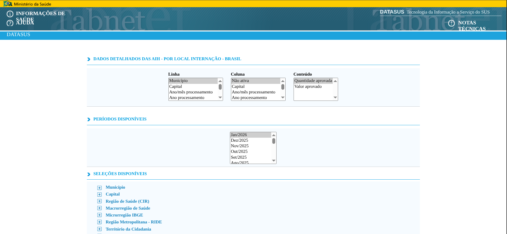

Automação de coleta de dados hospitalares públicos via Selenium + Pandas

Baixar séries históricas do SIH para os últimos N meses, organizadas por todas as combinações de:
| Dimensão | Opções coletadas | Exemplo de dado |
|---|---|---|
| Coluna | Procedimento realizado, Especialidade | Cirurgia cardíaca |
| Conteúdo | Quantidade aprovada, Valor aprovado | 1.240 internações |
| Período | Últimos N meses (padrão: 13) | Jan/2025 … Jan/2026 |
.csv por combinação, separados por ;, com coluna ano indicando o período — prontos para Excel, Power BI ou Python.
| Ferramenta | Papel no projeto |
|---|---|
| Selenium | Controla o Chrome: clica, espera elementos, troca de abas |
| Pandas | Converte o texto CSV em DataFrame e concatena os meses |
| uv | Gerencia o ambiente virtual e as versões exatas das dependências |
| ChromeDriver | Interface entre Selenium e o navegador (via Selenium Manager) |
;<pre>, converte em DataFrame, acumula os mesesbaixados/Helpers — encapsulam a espera pelo elemento antes de agir, evitando repetição:
Lógica principal — três níveis de loop: Coluna → Conteúdo → Mês
| Critério | Selenium | Playwright |
|---|---|---|
| Espera por elementos | Manual — exige WebDriverWait em cada ação |
Auto-wait nativo — espera automaticamente o elemento estar pronto |
| Troca de abas | Detectar e trocar de janela manualmente | Captura a nova página com page.wait_for_event('popup') |
| Modo headless | Configuração extra no ChromeOptions | Headless por padrão, sem configuração adicional |
| Velocidade | Mais lento — protocolo WebDriver sobre HTTP | Mais rápido — comunica diretamente via WebSocket (CDP) |
| API | Verbosa — muitas linhas para ações simples | Fluente — page.click(), page.fill(), page.content() |